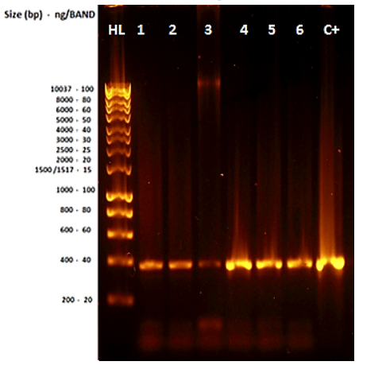

By Sean West and Vanessa Segovia
7/11/2014
The purpose of this investigation was to detect the presence of Escherichia coli (E. coli) on ready-to-eat alfalfa sprouts and spinach leaves purchased locally. This involved the use of both phenotypic and genotypic analysis. The methodology of this study was based on the isolation of bacteria present in the vegetables sampled, phenotypic tests (Gram-stain technique, selective media, and biochemical tests), DNA extraction and amplification (PCR for 16S ribosomal RNA, ERIC sequences and $stx_{1}$ genes), DNA-amplified purification, and sequencing. According to the phenotypic tests, the presence of E. coli in the samples was unlikely; these results were confirmed and supported by the results based on molecular methods obtained. Sequencing results indicated the presence of Aeromonas media (an opportunistic pathogen), and Pseudomonas koreensis (usually found in agricultural soil). These results were consistent with phenotypic results obtained. In conclusion, phenotypic methods represent an important contribution for bacteria identification; however, molecular methods are highly precise and accurate in comparison to them. This sample may be considered satisfactory and acceptable for human consumption.
E. coli is a gram-negative, facultative anaerobe, bacilli bacterium that is commonly found in the lower intestine of warm-blooded organisms. It is an essential part of the natural flora of the human gut. Along with a whole community of other bacteria, they play a role in metabolism by fermentation of non-digestible dietary residue, the salvage of energy as short-chain fatty acids, production of vitamin K, and absorption of ions. In addition to digestive functions, they serve to control proliferation of epithelial cells. And finally, they contribute to homeostasis of the immune system along with protection against pathogens.
When E. coli bacteria have the ability to share DNA, which can occur between E. coli themselves and other different species of bacteria, new metabolic capabilities or virulence factors can be acquired. One mechanism for DNA sharing is infection by prophages.
One such disease is known as hemolytic uremic syndrome (HUS) caused by shigatoxigenic E. coli (STEC). In 2011, STEC O104:H4 resulted in a large outbreak of HUS in Germany and 15 other countries in Europe and North America, causing a public health crisis and over two billion US dollars in economic losses. The present study followed some of the genotypic methods used in this investigation to detect and identify genes for virulence factors.
The present investigation used the method for separating microorganisms from ready-to-eat vegetables as outlined in Australia standard AS5013 for testing for microbes in ready-to-eat food. This involved the use of peptone water for the recovery of bacteria from samples, which is commonly used for E. coli testing as it allows for the recovery of injured cells. The use of selective media is essential for microbial isolation. On ChromoCult® agar, E. coli appears blue due to the hydrolysis of the media by $\beta$-glucuronidase enzyme produced by E. coli, while other coliforms produce a salmon color. However, the control E. coli O157:H7 lacks the ability to produce beta-glucuronidase, thus also produces pink colonies. Usually, E. coli can be easily differentiated from other bacteria on EMB agar due to the characteristic green metallic sheen produced by the fermentation of lactose and flagella movements. Phenotypic bacterial identification is complicated and non-accurate, but has been useful for general bacterial identification (genus). Some basic biochemical tests used are Gram staining, catalase, oxidase, indole, methyl red, and Voges-Proskauer tests. Differences in season or any physical characteristics of the sample may affect their outcome, and viral infection may also produce unstable phenotypes. This has led to the development of other typing methods based on the microbial genotype to minimize reproducibility problems.
One widely used genetic technique for typing is the polymerase chain reaction (PCR), which replicates DNA by imitating natural processes in an in vitro process with tight controls on temperature and chemical conditions. PCR replicates DNA in shorter runs rather than the whole genome. To check for toxin genes, PCR is run with specific primers that match the gene in question, allowing a run of DNA to be copied. Universal primers (such as 27 forward and 1492 reverse) are highly useful for the 16S rRNA PCR assay for identification purposes due to it being a highly conserved and essential gene among bacteria. The sequence of two closely related bacteria will be more similar than that of more distantly related bacteria, and exact nucleotide sequences can be compared to a database of established sequences. Primers used for Enterobacterial Repetitive Intergenic Consensus (ERIC) sequences match a common sequence of repetitive nucleotides existing between genes in enterobacterial species. When PCR is run with this primer, these repetitive sequences are amplified to large numbers, visualized as a characteristic pattern on an electrophoresis gel. ERIC sequences are useful for fingerprinting bacteria, similar to how junk DNA is used in humans. The $stx_{1}$ primer set encodes for shiga-like toxin type 1; if the gene is present, it will be amplified and able to be visualized as products of a specific size, for instance, ~366 bp long.
Another important molecular technique is electrophoresis, which uses electricity to separate molecules through a non-reactive matrix. Gel electrophoresis is most commonly used, with the matrix composed of either agarose gel or polyacrylamide gel. Agarose is used to separate large molecules like DNA, while polyacrylamide gel is used for smaller molecules like proteins. The migration rate of DNA through the gel is proportional to the number of bases, meaning heavier molecules travel slower, producing a pattern comparable to ladders with known base markers. Molecules move due to the resistance of their electric charge against the charge generated by electrodes. Fragments embedded in the gel can be stained and visualized under ultraviolet light.
The purpose of this experiment was to isolate, identify, and detect the presence of potential pathogenicity of E. coli from ready-to-eat spinach and alfalfa sprouts by phenotypic and genotypic techniques.
One sample of spinach and alfalfa sprouts were obtained from a randomly selected supermarket. The preparation of the samples was based on the FSANZ guidelines: 10 g of each sample were weighed using sterile stomacher bags, and then diluted in 90 mL of peptone water. Each bag was placed into a stomacher for 2 minutes to improve sample homogenization and organism recovery.
$100~\mu L$ of each sample were immediately placed and spread by duplicate onto selective media agar plates (EMB agar and Chromocult agar). As a positive control, one colony of E. coli O157:H7 was streaked by duplicated onto the same type of media. All six plates were incubated aerobically at $37^{\circ}C$ for 48 hours. After that, the agar plates of the sample were compared with the positive control agar plates to evidence the presence or absence of similarities between the morphology of the colonies forming units (CFU). Next, coliform-like colonies observed on the EMB agar (dark blue-black color colonies) and Chromocult agar (salmon color colonies) inoculated with the samples were selected as shown in Figure 1. Furthermore, one colony of the positive control was selected from the EMB agar. All selected colonies were streaked onto nutrient agar plates and incubated aerobically at $37^{\circ}C$ for 48 hours. The rest of the plates were kept at $\sim4^{\circ}C$. Following that, the isolated colonies were transferred to pre-labelled tubes with nutrient broth (1 to 3 for colonies from sprouts; 4 to 6 for colonies from spinach; 7 for positive control), and incubated under identical conditions previously mentioned. Results were recorded, tabulated, and analyzed.
Figure 1. Protocol followed for the selection of colonies to be isolated.
Morphology and chemical cell wall constitution of the isolated bacteria were examined by the Christian Gram stain method (1884) using light microscopy. After that, biochemical tests available and considered relevant for the identification of E. coli were performed (catalase, oxidase, lactose and glucose fermentation, indole, Voges-Proskauer (VP), methyl red (MR). To perform the catalase test, one colony of interest was placed on a glass slide; then, three drops of hydrogen peroxide were added onto the colony. The oxidase test was executed by using oxidase detection strips (Oxoid, 2014). Indole, VP, MR, lactose and glucose fermentation test tubes were inoculated with $100~\mu L$ of the nutrient broth cultures, and incubated at $37^{\circ}C$ for 24 hours. Later, results obtained and expected were recorded, tabulated, compared, and analyzed.
The isolation of genomic DNA from Gram-negative bacteria was performed by following the guidelines displayed in the Wizard® genomic DNA purification kit (Promega, 2010). First, an aliquot of 1.8 mL of each overnight bacterial suspension (samples) was placed into pre-labelled (1 to 7) 2 mL collection tubes. Next, the tubes were centrifuged at high speed (14000 rpm) for 1 minute, and the supernatant was discarded. The pellets were resuspended by adding $500~\mu L$ of extraction buffer. Afterwards, $20~\mu L$ of Lysozyme $(10~mg/mL)$ were added to each tube to cause the bacterial cell lysis. The tubes were sealed and vortexed thoroughly. Later, the tubes were incubated on ice for 15 minutes, followed by 5 minutes at $80^{\circ}C$, and 5 minutes more on ice to cool them down. Following that, $250~\mu L$ of 6 M ammonium acetate (stored on ice) were added to each tube, which were then sealed and vortexed vigorously, and left to stand for 10 minutes on ice. After that, the tubes were centrifuged at 14000 rpm for 5 minutes to collect the precipitated proteins and cellular biomass. Subsequently, $600~\mu L$ of the supernatant were recovered into new pre-labelled microcentrifuge tubes containing $360~\mu L$ of iso-propanol. The tubes were inverted around 5 times; then left for 5 minutes to allow the DNA to precipitate; and centrifuged (14000 rpm) for 5 minutes to pellet the DNA. The supernatant was tipped off, and the remaining fluid was drained off by inversion of the tubes onto a piece of paper towel. Successively, $500~\mu L$ of 70% ethanol were added to the tubes to wash the pellets. The tubes were then centrifuged (14000 rpm) for 5 minutes, and the supernatant discarded. The pellets (containing the DNA extracted) were resuspended in $100~\mu L$ of sterile water and $2~\mu L$ of RNase $(10~mg/mL)$. Finally, the quantity of DNA was measured by spectrophotometry using Biowave II and Hellma cell (Biochrom, 2006); and the quality was measured by electrophoresis. Results obtained and expected were recorded, tabulated, compared, and analyzed.
The quality of the genomic DNA extracted was determined by 1% agarose gel electrophoresis technique. To perform this technique, the first step was the preparation of the 1% agarose gel. 0.25 g of UltraPure™ agarose (Invitrogen, 2010) were weighed and placed into a flask; then, 30 mL of Tris-Acetate-EDTA (TAE) Buffer (previously diluted 30 mL in 270 mL of distilled water) were added to the flask, which was later placed into a microwave for ~45 seconds or until total dissolution of the solute. After 2-3 minutes, $2.5~\mu L$ of red gel were added to the flask and carefully shaken for 10 seconds. The content of the flask was poured into a casting tray with a comb. After solidification of the agarose gel, $5~\mu L$ of a molecular weight marker (Bioline 2014) was loaded into the first well (lane 1) of the gel, followed by $5~\mu L$ of each sample into the remaining wells. Later, the casting tray is placed into a gel box, which is then filled with diluted TAE buffer. The electrophoresis was run at 100 volts for 45 minutes. The gel was visualized under UV transilluminator. Results expected and obtained were recorded, compared, and analyzed.
In order to detect and identify E. coli from the samples (genomic DNA extracted), selected fractions of the gene that encodes for the 16S rRNA were amplified by PCR technique using the 27-forward (27F) and 1492-reverse (1492R) universal primers (product ~1500 bp). The $stx_{1}F$ and $stx_{1}R$ primers were used to amplify DNA fractions of the gene that encodes for the $Stx_{1}$ (product ~366 bp). To compare the fingerprinting pattern of the ERIC sequences of E. coli with the patterns of the samples, the ERIC1R and ERIC2 primers were used (product ~126 bp). To perform the PCR assays, a total volume of $50~\mu L$ of each sample was prepared in Eppendorf for PCR tubes as displayed in Table 1. Details about the primers and the conditions used for each PCR assay performed can be observed in Table 2.
| 16S rRNA | $Stx_{1}$ | ERIC | |
|---|---|---|---|
| Mango $Mix^{*}$ | $25~\mu l$ | $25~\mu l$ | $25~\mu l$ |
| Forward primer | $1~\mu l$ | $1~\mu l$ | $1~\mu l$ |
| Reverse primer | $1~\mu l$ | $1~\mu l$ | $1~\mu l$ |
| Sample | $15~\mu l$ | $15~\mu l$ | $15~\mu l$ |
| Water | $8~\mu l$ | $8~\mu l$ | $8~\mu l$ |
| Total volume preparer per sample | $50~\mu l$ | $50~\mu l$ | $50~\mu l$ |
| Number of samples | 7 | 7 | 7 |
| Primer | Sequence $5^{\prime}\rightarrow3^{\prime}$ | Product expected | PCR conditions | |||
|---|---|---|---|---|---|---|
| 27F | AGA GTT TGA TCC TGG CTC AG | ~1500 bp | Initial Denaturalization: $94^{\circ}C$ | 1c | 5 min | |
| Denaturalization: $94^{\circ}C$ | 34 | 1 min | ||||
| GGT TAC CTT GTT ACG ACT T | Annealing: $65^{\circ}C$ | 1c | 1 min | |||
| Elongation: $72^{\circ}C$ | 1 min | |||||
| Final elongation: $72^{\circ}C$ | 1c | 10 min | ||||
| 1492R | Final hold: $15^{\circ}C$ | 1c | 00 | |||
| ERIC1R | AAA TCG CCA TTC GTT GAC TAC TTC T | ~366 bp | Initial Denaturalization: $94^{\circ}C$ | 1c | 5 min | |
| Denaturalization: $94^{\circ}C$ | 34 | 1 min | ||||
| Annealing: $65^{\circ}C$ | 1c | 1 min | ||||
| $stx_{1}F$ | Elongation: $72^{\circ}C$ | 1 min | ||||
| Final elongation: $72^{\circ}C$ | 1c | 10 min | ||||
| $stx_{1}R$ | TGC CAT TCT GGC AAC TCG CGA TGC A | Final hold: $15^{\circ}C$ | 1c | 00 | ||
| ATG TAA GCT CCT GGG GAT TCA C | ~126 bp | Initial Denaturalization: $95^{\circ}C$ | 1c | 7 min | ||
| Denaturalization: $90^{\circ}C$ | 30 | 30 sec | ||||
| Annealing: $52^{\circ}C$ | 1c | 1 min | ||||
| Elongation: $65^{\circ}C$ | 1c | 8 min | ||||
| ERIC2 | AAG TAA GTG ACT GGG GTG AGC G | Final elongation: $65^{\circ}C$ | 1c | 16 min | ||
| Final hold: $15^{\circ}C$ | 1c | 00 |
After the sample preparation, three agarose gels (1%) were prepared in an identical routine as explained previously ("Quality examination"). Moreover, the molecular weight marker (Bioline 2014) and the samples were loaded following the same pattern mentioned.
Due to the high phenotypical similarities evidenced between bacteria in samples 1-2 and 4-5, only four of the six samples were selected to be sequenced (2, 3, 4, and 6). These samples were re-labelled as VS1, VS2, VS3, and VS4, respectively. After that, the DNA from the 16S rRNA PCR amplification was purified by centrifugation following the protocol of the Wizard® SV Gel and PCR Clean-Up System kit (Promega, 2002). To perform this, four minicolumns (one per sample) from the kit were placed in a collection tube. Then, the PCR products were transferred to the minicolumns and incubated at room temperature (RT) for 1 minute. Later, the minicolumns were centrifuged at 13000 rpm for 1 minute. Following that, the minicolumns were removed from the Spin Column assembly; the liquid contained in the collection tubes was discarded; and the minicolumns were returned to the collection tubes. Subsequently, the columns were washed by adding $700~\mu L$ of Membrane Wash Solution diluted with 95% ethanol to the minicolumn. The tubes were centrifuged at 13000 rpm for 1 minute. Next, the liquid contained in the collection tubes was discarded and the minicolumns placed back in the Collection Tubes. After that, the columns were washed a second time with $500~\mu L$ of Membrane Wash Solution, and centrifuged for 5 minutes at 13000 rpm. The liquid into the collection tubes was discarded, and the microcolumns centrifuged again at 13000 rpm for 1 minute with the microcentrifuge lid off to allow the evaporation of any residual ethanol. Then, the microcolumns were carefully transferred to clean and pre-labelled 1.5 mL microcentrifuge tubes. Successively, $50~\mu L$ of nuclease-free water were applied directly to the center of the microcolumns (without touching the membrane). The tubes were incubated at RT for 1 minute, and later centrifuged for 1 minute (13000 rpm). The minicolumns were discarded. After that, the concentration of DNA in the samples was measured by spectrophotometry with a NanoDrop (Thermo_scientific 2013) and considered to prepare the sample to be sent to sequencing; one 1.5 mL microcentrifuge tube with a unique primer-27 forward ($1~\mu L$), sample ($7~\mu L$), and pure water ($4~\mu L$) with a final volume of $12~\mu L$ and a concentration between 30 and $75~ng/12~\mu L$ (Australian Genome Research Facility 2014).
The suitable samples were compared to the GenBank database using the basic local alignment search tool (BLAST) (Found at www.ncbi.nlm.nih.gov/blast/). Of the data received from the Australian Genome Research Facility Ltd, there were four files. Firstly, there was the Applied Biosystems file (.abl) which gave a chromatogram of the results; secondly, there were three raw sequence files not of interest in this experiment: the sequence file that contained data as recorded by the instrumentation without selection for quality (.seq); the version of the previous file that had been analyzed by a computer for accuracy and edited to produce what it determined to be the best quality parts of the sequence (.fa); and a version of the file converted into a format that would easily allow it to be uploaded to the BLAST tool (.bn).
The Applied Biosystems chromatogram files obtained from auto sequencer instruments were opened by a free program called Bioedit. When this file is opened in Bioedit, it will display a graph along with a sequence. Firstly, the sequence was trimmed to obtain a final sequence that resembled Figure 2 with non-overlapped peaks; by cutting out the portions that resembled Figure 3 at the extreme right and Figure 4 at the extreme left as detailed by Hall (2004).
Figure 2. Chromatogram in the most accurate region of its run where peaks are easily distinguishable.
Figure 3. Chromatogram which has reached the end of its accurate run of bases.
Figure 4. Contaminated sample that cannot be accurately read (typical of what would be seen at the start of a chromatogram).

Rather than relying on a computer algorithm to trim the results as was available in the ".fa" and ".bn" files, the above method was used to select the sequence data that would be used for analysis. After the selection of the sequence, it was then copied to the clipboard. From the BLAST webpage, a Standard Nucleotide BLAST was selected with the following parameters: for database "16S ribosomal RNA sequence (Bacteria and Archea)" was selected and the search program selection was set to "Optimize for Highly similar sequences (megablast)". Then in the text box below "Enter accession number(s), gi(s), or FASTA sequence(s)", a ">" character and then a note or name for the sample was inputted. On the next line, the trimmed sequence obtained previously was pasted in and the sequence run by clicking the "BLAST" button. Then after some time, a list was generated of the most likely matches to the nucleotide sequence. Then with some deduction and weighing up the coverage of the sample, the percentage match of results it was concluded which sample was most likely to be the organism present. The organisms with the highest percentage match were selected and used for the results.
Results obtained from the examination of the morphology and chemical composition of cell walls based on the Gram-stain method were identical for all of the samples and the control. All bacteria observed were Gram-negative (pink) bacilli (rod shaped).
The physical appearance description of the bacteria present in the samples on the selective media can be observed and compared with the results expected in the following table.
| Results expected | Results obtained | |||
|---|---|---|---|---|
| EMB agar | Control (E. coli) | Dark-blue or black colonies with green metallic sheen in reflected light. | control | Dark-blue or black colonies with green metallic sheen in reflected light. |
| Coliforms | Dark-blue or black colonies. | Sprouts | -Dark-blue or black colonies. -Colourless colonies. |
|
| Non-coliforms | Colourless colonies. | Spinach | -Dark-blue or black colonies. -Colourless colonies. |
|
| Chromocult agar | control | Blue-violet colour colonies. | control | Salmon-red colour colonies. |
| Coliforms | Salmon-red colour colonies. | Sprouts | Salmon-red colour colonies. Yellow colour colonies. |
|
| Non-coliforms | Yellow colour colonies. | Spinach | Salmon-red colour colonies. Yellow colour colonies. |
Biochemical test results were summarized in the following table. Non-identical results between the positive control (E. coli) and the samples were observed.
| Test | Expected Control + | Sprouts | Spinach | ||||
|---|---|---|---|---|---|---|---|
| 1 | 2 | 3 | 4 | 5 | 6 | ||
| Catalase | + | + | + | + | + | + | + |
| Oxidase | - | - | - | - | + | + | + |
| Voges Proskauer | - | - | - | - | - | - | D/+ |
| Methyl red | + | + | + | + | + | + | + |
| Indole | + | + | + | + | + | + | + |
| Lactose | + | + | + | + | + | + | + |
| Glucose | + | + | + | + | + | + | + |
The following table shows the concentration of genomic DNA (Biowave II and Hellma cell), and the concentration of the amplified products obtained from the PCR 16S rRNA in the samples destined to be sequenced (NanoDrop).
| Sample | Concentration of genomic DNA ($ng/\mu L$) | Concentration of 16S rRNA amplified DNA ($ng/\mu L$) |
|---|---|---|
| 1 | 120 | |
| 2 | 74 | 15.9 |
| 3 | 131 | 13.4 |
| 4 | 27.5 | 13.8 |
| 5 | 61 | |
| 6 | 52.5 | 13.4 |
| 7 (positive control) | 134 | |
| 8 (negative control) | 0 | 0 |
The following figure shows the result obtained from the DNA extraction assay performed. The presence of thick bands with a size > 10000 bp, and concentrations over 100 ng/band were evidenced.
Figure 5. Genomic DNA on agarose gel (1%). Lane 1: molecular weight marker; lanes 2 to 7: samples 1 to 6; lane 8: positive control (E. coli).
Figure 6 displays the results obtained from the PCR for 16S rRNA performed. It could be observed the presence of a band (product) of approximately 1500 bp size and a minimum concentration of 30 ng/band in all of the lanes. Product expected ~1500 bp.
Figure 6. Products obtained from PCR rRNA on agarose gel (1%). Lane 1: molecular weight marker; lanes 2 to 7: samples 1 to 6; lane 8: positive control (E. coli).

The following figure illustrates the results obtained from the PCR for ERIC sequences performed. The presence of numerous products was evidenced in all of the bands. Non-identical pattern of products were observed between E. coli (C+) and the samples (1 to 6); nor between the samples.
Figure 7. Products obtained from PCR of ERIC sequences on an agarose gel (1%). Lane 1: molecular weight marker; lanes 2 to 7: samples 1 to 6; lane 8: positive control (E. coli).
The visualization of bands of ~366 bp in all of the lanes (2 to 8) indicated the presence of Stx1 products in the control and in all of the samples.
Figure 8. Products obtained from PCR of Stx1 on an agarose gel (1%). Lane 1: molecular weight marker; lanes 2 to 7: samples 1 to 6; lane 8: positive control (E. coli).
The following table (Table 6) shows the results obtained from the sequencing of the 16S rRNA gene for the samples selected, re-labelled, and sent to AGRF. Figure 9 displays the resulting quality and intensity of the data corresponding to each sample based on their chromatograms.
| Sample Name | Q20 Bases | Intensity |
|---|---|---|
| VS1_C05 | 463 | 281 |
| VS2_C06 | 189 | 254 |
| VS3_C07 | 1100 | 225 |
| VS4_C08 | 1125 | 233 |
Figure 9. From left to right, quality and the intensity of each sample (1, 2, 3 and 4).
Table 7 reflects the results obtained from the BLAST analysis performed.
| Sample | Percentage match (%) | Identification |
|---|---|---|
| 1 | Not applicable | Not applicable |
| 2 | Not applicable | Not applicable |
| 3 | 98% (1096/1121 bp) | Aeromonas media strain RM |
| 4 | 99% (994/997 bp) | Pseudomonas koreensis strain Ps 9-14 |
The Gram stain technique performed showed that all bacteria in the samples exhibited the same rod-shaped morphology (bacilli) and Gram-negative (thin peptidoglycan layer) cell wall chemical composition as E. coli. Results from the EMB medium were not consistent with expected results, as typical E. coli colonies were not observed in either spinach or sprout samples. However, not all E. coli strains produce a green metallic sheen on EMB medium, which is considered a limitation of this medium. The expected result for E. coli (blue colonies) on Chromocult agar was not observed even in the control plate because the E. coli O157:H7 strain used as a positive control does not produce the glucuronidase enzyme responsible for the blue color. Consequently, this bacterium cannot be differentiated from other coliforms.
Regarding biochemical tests, the oxidase test clearly distinguished between the two isolated bacterial groups. In the sprout sample, all isolated bacteria were oxidase-negative, while only catalase-positive bacteria were isolated from the spinach sample. E. coli and other enterobacteria are described as non-cytochrome oxidase enzyme producers (oxidase-negative microorganisms). Some morphologically similar but oxidase-positive bacteria include Pseudomonas, Aeromonas, and Vibrio. The summary of results indicated that samples 1-2 and 4-5 exhibited identical results, suggesting the possible presence of the same oxidase-positive bacteria in samples 1 and 2, and the same oxidase-positive bacterial genus in samples 4 and 5. Moreover, none of the bacteria present in the samples possessed the same biochemical requirements and behavior as the positive control, which entirely corresponded with E. coli. According to Brenner (2005), the obtained results are roughly consistent with Klebsiella, Enterobacter, Pseudomonas, and Aeromonas bacteria. Despite the group biochemical tests used to distinguish E. coli cells from other bacteria, they were not sufficient to detect E. coli O157:H7. One test that was not used in this study due to unavailability, but could be valuable for detecting this strain, is the sorbitol test.
Concerning the genotypic analysis, the gel electrophoresis image (Figure 2, likely referring to Figure 5 based on content) based on DNA extraction showed typical bands corresponding to genomic DNA in all samples (including the positive control), indicating successful DNA extraction and suitability for PCR assays. In the gel electrophoresis corresponding to PCR for 16S rRNA (Figure 3, likely referring to Figure 6 based on content), the product size (approximately 1500 bp) for all samples was consistent with expected results using 27F and 1492R primers, thus samples were suitable for purification and sequencing. In the gel electrophoresis image (Figure 4, likely referring to Figure 7 based on content) illustrating ERIC sequences PCR results, the product pattern was inconsistent with E. coli, suggesting that despite identical biochemical tests, bacteria in samples 1-2 and 4-5 were not the same, highlighting molecular technology as an effective method for accurate bacterial identification. By contrast, the image corresponding to the PCR assay for the $stx_{1}$ gene (Figure 5, likely referring to Figure 8 based on content) showed the presence of the $stx_{1}$ gene (encoding for the $stx_{1}$ toxin) in all isolated bacteria, indicating their potential pathogenicity (to cause HUS). However, this depends on the infectious dose, which varies by bacteria (e.g., E. coli O157:H7's infectious dose is less than 2000 cells), and the expression of the gene and factors that can induce it, such as bacterial stress response (e.g., certain antibiotics).
The data received from the Australian Genome Research Facility Ltd showed that results for samples 1 and 2 were unsuitable for sequencing due to poor quality (less than 50 bp), as observed in Table 6 and Figure 9. Poor Q scores (189 and 463 for samples 2 and 1 respectively) are based on the probability of called bases compared to other possibilities; thus, overlapping peaks likely relate to contamination from improper purification techniques (e.g., failure to spin at 14000 rpm). Conversely, Q scores for sequenced samples (3 and 4) were both above 1000, considered acceptable quality. Intensity denotes signal strength for each chromatogram peak, with less than 700 being ideal to avoid adjacent signal interference. Therefore, a combination of quality and intensity is crucial for accurate sequences. Sequence data analysis relies on computer programs, meaning input errors are treated as actual bases, making accurate sequence trimming essential.
With 98% similarity, Aeromonas media was identified in sample 3. This result was consistent with biochemical test results and Brenner's (2005) description of this bacterium. A. media has been isolated from river and drinking water, and stool specimens from patients with diarrhea. It can grow between 4-37 °C, but not at 42 °C, and is considered an opportunistic pathogen, predominantly for children under five years old. Results from the PCR for the $stx_{1}$ gene indicated that this bacterium possesses the gene for shiga-like toxin type 1. According to Alperi & Figueras (2010), this gene is present in Aeromonas isolated from stool specimens of humans with HUS, specifically in A. caviae, A. hydrophila, A. veronii, but not in A. media. Thus, the results obtained in this study regarding the potential pathogenicity of A. media may contribute to the scientific community.
Similarly, the $stx_{1}$ gene was found in Pseudomonas koreensis, a mesophilic bacterium usually isolated in agricultural soil, water, and infected eyes of goldfish. No information supporting the presence of the $stx_{1}$ gene in P. koreensis or any isolates of this bacterium in humans was found. However, the $stx_{1}$ gene has been detected in Pseudomonas aeruginosa. In light of this, the presence of this gene in the isolated A. media could be caused by genetic transference, which is highly possible since both P. aeruginosa and A. media have been found inhabiting the same environments.
In this experiment, no E. coli was found on the ready-to-eat spinach or alfalfa sprouts. This was evidenced by comparing collected samples with control E. coli in various tests. However, the bacteria present contained the gene for the production of shiga-like toxin type 1, which can cause Shigellosis in humans. Though, of the bacteria positively identified, none were known to be a problem for healthy people. They were also both known to be normal inhabitants of soil, and their presence would be expected on a food sample. Additionally, the bacterial load of the salad would be a deciding factor in whether someone could become ill after consuming this particular salad. This was not studied as this was a qualitative rather than quantitative study.